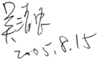

后记
愿天下人都能拥有健康的自信
怀着戒慎恐惧的心情，花了许多年，不知改了多少个版本，总算完成了这本书。这本书原本的用意是免费提供给需要的朋友，并且同意他们可以送给需要的人，因此，在网络上流传了3年，没想到却受到许多网友的青睐，其中很多人建议我出版平面的书，并且也有出版社感兴趣。由于3年来，我自己又有许多新的体会和想法，因此又花了几个月重新整理，增删了许多章节，并且加上必要的图片，完成了这本书。
现代的医学几乎对所有慢性病都束手无策，显然医学这门科学存在着很大的缺陷。这是一门会影响每一个人生和死的学问，有时候小小的一个错误都会让某些人失去生命，没有机会补救。因此，这个行业有很严格的法律，限制着各种行为。这些法律原来的用意是为了保护病患的权益，也保护了医生权益。法律规定医生只要用被认可的医疗方法为患者治病，如果因此导致患者发生生命上的任何损失，他们没有责任。由于事关人命，任何这方面的法律责任都是非常严重的。
这样的法律也严格地限制了医生思考的动力，只有在教学医院工作的医生有资格开发新的治疗方法。即便是这些教学医院的医生，也必须冒着很大的风险，经过很长时间的动物实验，才能在病人身上施行。
多数的医生都只能用学校所学，或医学界公认的方法来治病。虽然全世界有这么多的医生，但是只有极少数的医生有条件开创新的医疗方法。在这样的环境里，就算华佗再世也很难再成为一个神医。
虽然在这本书中对整个现代医学有很直接的批评，但是当我们亲身经历在加护病房中与患者共同和死神搏斗，体会了那种惊心动魄的历程之后，对于许多献身医疗事业，每天必须面对这么恶劣环境的医护人员有无限的敬意，今天医学的问题并不是任何人的错，而是各种无法掌握的因素长期造成的。
我们所有的科学家伙伴们都没有医生资格，但是每一个人都花费很长的时间研读众多的中医古籍。我们不能开业行医，只能建议一些具有医师资格的朋友参考我们的方法，或者提供朋友观念上的指导。
多数时候，我们是在自己的身上进行各种试验，每个人都很珍惜每一次生病的机会，因为这是最好的实验机会。所幸我们的方法是最自然而且安全的，因此，并没有冒任何风险。每次生病，都有机会仔细观察自己体内到底发生了什么事，仔细思考身体在做什么。这本书有许多章节，都是我在生病时所写下来的。费伦教授则在多数的经络研究中充当白老鼠，多数实验中的照片都是他自己担任主角的。
也因为“我们不是医生”的限制，让我们有机会发展出这一套完全不需要医生资格就能做的保健手段和全新的健康观念。却意外地发现，原来正确的观念比昂贵的药物和危险的手术更能帮助患者消除疾病。
由于我们都没有受过正统医学的教育，在思考疾病的成因时，完全没有任何框架，每个人用他原来学过的科学知识来建构自己的疾病模型，再经过一群不同技术背景的朋友共同讨论，就发展出这一套理论和观念。我们不敢说这就是真理，但是，许多朋友读过我们整理的文章后，都认为很有道理，也很合逻辑。其中很多人身体力行地奉行我们的一式三招及健康观念，健康真的就这么得到了。
希望这本书能够带给更多的朋友和家庭健康快乐的人生，也给医学界带来一点改变，让更多的人开始思考医学的基本问题，建构更接近真理的医学模型。有朝一日能够将现在困扰全世界的这些慢性病全数消除。
每一个人学会了正确使用自己身体的方法之后，睡眠成为最重要的健康手段，未来的医疗费用应该极为低廉，希望有一天慢性病医疗服务不再是一种商业行为，而是社会最基本的公共设施，这个世界上的每一个人都有能力和权力享用。
在掌握了健康的方法之后，真正享受到完全不用担心疾病的自信，这种感觉真好，但愿您也能和我们一样拥有这份自信。
